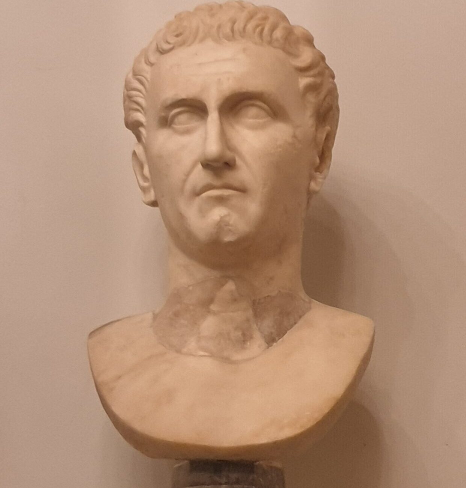

Nerva's Early Life
Nerva is the first of the good Emperor's, with his reign lasting just a little over 16 months from the years 96-98. Nerva is an odd emperor as not much of his early life was written about, he did come from a wealthy family and seemed to hold multiple priesthoods but did not go down the common route most Emperor's went down which was political or military. He did find favor with Emperor Nero after he revealed a plot that could have ended his life and did eventually come to hold two consulships (think prime minister) in his older years. It seems during Emperor Domitian's reign, he like many others fell out of his favor but despite this, once Domitian was assassinated, he was named Emperor the same day.
Nerva's Later Life
Nerva is not someone you would expect to become Emperor, by the time he had this position he was in his 60's and not the healthiest. He also had no military experience which led to the legion's disapproving of him. During his extremely short reign he did do some good for the Empire, he got rid of the treason trials that plagued Domitian's reign, got rid of the Jewish tax placed on Jews after a revolt in 70 AD, and gave citizens, the legions, and the praetorian guards gifts in the form of money, although these gifts did lead to strain on the Roman economy. Due to a multitude of reasons including not deifying Domitian, and not executing the people who assassinated him, Nerva faced backlash from both the Legions and Praetorian Guard. The problems he faced were not helped by his lack of an heir and his age and sickness. In 97, the praetorian guard laid seige to his villa, took him hostage, and forced him to accept their demands which included handing over the men involved in Domitian's death and they demanded he publically thank the praetorian guard who had taken him hostage. Not long after this whole incident he ended up adopting Trajan as his heir. In January of 98 Nerva had a stroke and quickly fell ill and passed away, this brought an end to his short and strenuous reign. Nerva, while being listed as the first of the five good Emperors, seems to be more of a transitional Emperor that led to the truly great years of the Empire.